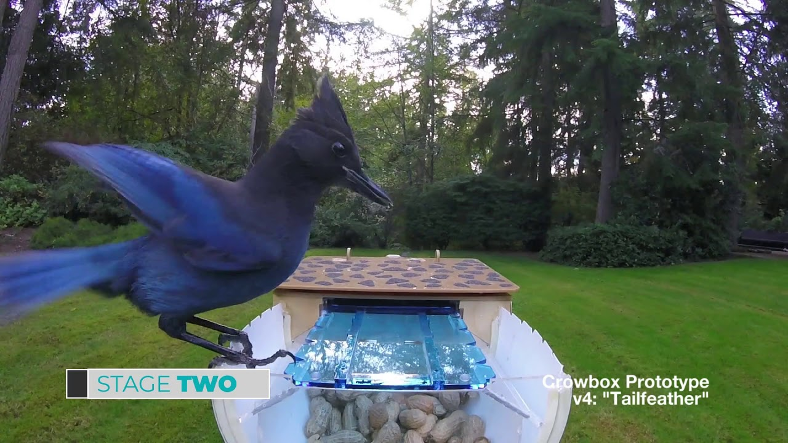
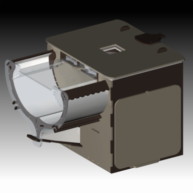
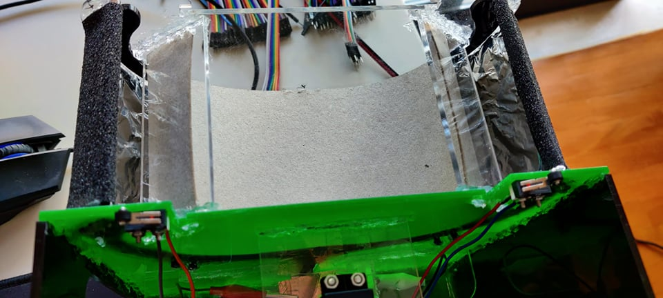

<!-- LOGGED OUT HEADER -->
<div *ngIf = "showHeader===false">    
    <app-subheader></app-subheader>
</div>

<!-- ORIGINAL HEADER -->
<div *ngIf = "showHeader === true">
    <app-header></app-header>
</div>


<div class="wrapper" fxLayout="column" fxLayoutAlign="start none">

    <div fxFlex="35" fxLayout="column" fxLayoutAlign="center center">
        <app-welcome style="width:100%"></app-welcome>
    </div>

    <div fxFlex="27" fxLayout="column" fxLayoutAlign="center center" fxLayoutGap="2%" class="howitworks">
        <div class="subtitle">
            How it Works
        </div>
        <app-infobox ></app-infobox>
    </div>


    <div fxFlex="50" fxLayout="column" fxLayoutAlign="center center" fxLayoutGap="2%">
        <div class=subtitle>
            Getting Started
        </div>
        <app-getting-started style="width: 90%;" fxFlex="90"></app-getting-started>
    </div>

    <div fxFlex="4"  fxLayout="column" fxLayoutAlign="center center" class="howitworks">
        <app-auth></app-auth>
    </div>
     
 </div>


<!-- WELCOME TEXT -->
<!-- <div id = "welcome">
    <div id="welcome1"> 
        <h2>Welcome to...</h2> 
    </div>

    <div id="welcome2" style="margin-bottom: 50px;"> <h1>The <br> Crowbox <br> 2.0</h1> </div>

    <div id = "welcome3">
       <h2>
        A Citizen Science Project connecting Humans with Crows
       </h2> 
    </div>

    
    <div id=welcome4 style="z-index: 100;">
        <app-auth></app-auth>
   </div>
</div>


<div id="image1"> 
    
</div>

<div id = "image2">
    
</div>
 -->


   
<!-- 
<div id = "about">
    <div id="aboutTitle">
        <h3>ABOUT</h3>
    </div>
    <div id ="aboutContent">
        <p>
            The Crow Box is a Citizen Science initiative that aims to train corvid species (e.g. crows) to deposit a variety of coins down a chute into a box. The overall goal is to study how we, as Humans, may be able to establish a strong connection between ourselves and Corvid Species. A consistent stream of communication between the two species would allow us to use Crows and Ravens for various tasks such as Find and Rescue as well as Litter Prevention. 
            <br style="    display: block;
            content: '';
            margin-top: 20px;">
            The Crow Box runs on 4 Training Stages. During Stage 1, the box acts like a bird feeder. The lid to the food is opened up and the box serves no other function than to aclamitise the birds to the box's look, feel and sounds. 
            <br style="    display: block;
            content: '';
            margin-top: 20px;">
            In Stage 2, the food lid is shut. When a crow lands on the top of the box, it clicks a button which opens the food lid. This basic reward system is to encourage the crows to land on the box as often as possible. 
            <br style="    display: block;
            content: '';
            margin-top: 20px;">
            In Stage 3, the crows will have access to a set of coins which they must figure out how to deposite into the box. Upon successfully depositing a coin down the access point, the food lid will open and they will once again be rewarded. 
            <br style="    display: block;
            content: '';
            margin-top: 20px;">
            The 4th and Final Stage functions similar to Stage 3, except the coins will not be provided to the crows as they will be expected to find and bring their own from the environment. 

        </p>
    </div>

    <div id ="aboutContent2">
        <p>
            This website has been made to allow you to operate your Crow Box remotely and from afar. Currently, in order to change Training Stages or count the Number of Coins Deposited, you would need to open up the box and manipulate the internals.  
            <br style="    display: block;
            content: '';
            margin-top: 20px;">
            With this website, everything is done for you! Coins are counted automatically and whenever a Crow lands on the top of your perch, you are immediately informed. You can change the training stage without ever leaving your seat. 
            <br style="    display: block;
            content: '';
            margin-top: 20px;">
            The site also serves as a Status Update mechanism. It will check the amount of food remaining in the box, the number of coins left in the dispenser and even the humidity level to ensure it remains safe from water. 
        </p>
    </div>

    <div id = "image3">
        
    </div>
</div>

<div id = "start">
    <div id="startTitle">
        <h3>GETTING STARTED</h3>
    </div>

    <div id="startContent">
        <p>
            To get started, simply create an account on the website. Then, using the same email and password combination, upload the code provided below to your NodeMCU ESP32. Give your Crow Box a name in the code as well! 
            <br style="    display: block;
            content: '';
            margin-top: 20px;">
            Once that is done, the Crowbox's data will automatically appear on your personal Data Page. 

        </p>
    </div>

    <div id = "image4">
        
    </div>

    <div id="startLogin">
        <app-auth></app-auth>
    </div>
</div>


 -->